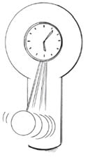
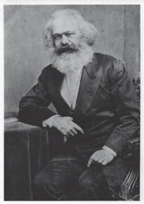

Bölüm 8

KAPİTALİZM SONRASI?
Marx bunu kendi işi olarak görmediğinden “geleceğin aşçılarına yemek tarifi” vermedi, kapitalizmden sonra ortaya çıkacak toplumun neye benzeyeceği hakkında ayrıntılı biçimde konuşmaktan hep kaçındı. Ama biz, onun kapitalizm eleştirisinden yola çıkıp böyle bir toplumun neye benzeyeceği konusunda bazı ilkeler derleyebiliriz.
Marx kapitalizmin başarılarını inkâr etmedi. Kendinden önceki üretim tarzlarının hayal bile edemeyeceği müthiş üretken enerjiler geliştirdiğini kabul ediyordu.
Burjuvazi henüz yüz yılı bulmayan sınıf hâkimiyeti süresince daha önceki kuşakların hepsinden daha büyük ve daha görkemli üretici güçler yarattı. Doğa güçlerine boyun eğdirilmesi, makineler, kimyanın sanayi ve tarıma uygulanması, buharlı gemiler, demiryolları, elektrikli telgraflar, koskoca kıtaların tarıma, nehirlerin gemiciliğe elverişli kılınması, mantar gibi biten nüfuslar –daha önceki yüzyıllarda, toplumsal emeğin bağrında bu üretici güçlerin yattığına ilişkin bir önsezi olsun var mıydı acaba?
Marx, Komünist Manifesto, s. 46-47

Doğayı değiştirme konusundaki yetilerimizi daha da arttırmış, harika (ama öldürücü de olabilen) makineler yapmış, bilimi sanayiye uygulamış, yeni ulaşım ve iletişim tarzları icat edip geliştirmiş, bomboş arazilerde hızla kentler kurmuş olan bugünün üretim güçlerinin düzeyi Marx’ı şaşırtmazdı.
Ama tam da bu başarıları, kapitalizmin tarihsel sonunu hem gerekli hem olası kılar. Olası kılar çünkü burada elimizdeki üretim güçleri ihtiyaçları, yoksunluğu, açlığı, eşitsizliği ortadan kaldıracak kadar kuvvetlidir. Gerekli kılar çünkü kapitalizmin toplumsal ilişkileri, bu olasılıkların gerçekleştirilmesini sürekli engeller, hatta üretim güçlerini aleyhimize çevirir.
Artık emek-zamanın büyümesinde bu çok açıktır. Üretim güçleri kuvvetlendikçe, işçilerin yeniden üretim için çalışmak zorunda olduğu süre kısalır. Ama üretkenliğin gelişmesiyle emek-zamanları kısalmaz. Tersine artık emek-zaman büyür.
Kapitalist üretim biçiminin ortadan kaldırılması, iş gününün gerekli emek-zamanla sınırlanmasına izin verir. Buna karşın, gerekli emek-zaman, başka koşullar aynı kalırken, kendi alanını genişletirdi, çünkü bir yandan işçinin yaşam koşulları zenginleşir ve yaşamdan beklentileri artardı, diğer yandan bugünün artık emeğinin bir bölümü, yani bir toplumsal yedek fonun ve birikim fonunun oluşturulması için ihtiyaç duyulan emek, gerekli emek sayılırdı.
Marx, Kapital s. 504
Sosyalizm, gerekli emek ile artık emek arasındaki ayırımı kaldırmak demektir. Artık değer gibi bir şey olamaz çünkü bütün emek, işçilerin gerek duyup talep ettikleri şeylere dönüşür. Gerekli emek artsa bile hâlâ bugünün gerekli ve artık emek bileşiminden az olur.
Emeğin yoğunluğu ve üretici gücü verilmiş kabul edildiğinde, çalışma, toplumun çalışabilir durumdaki tüm üyeleri arasında ne kadar eşit dağıtılırsa ve toplumun belli bir katmanı, doğal bir zorunluluk olan çalışma zorunluluğunu kendi sırtından atıp toplumun diğer bir katmanının sırtına yüklemeyi ne kadar az başarabilirse, toplumsal iş gününün maddi üretim için gerekli kısmı o kadar kısa ve dolayısıyla da bireylerin özgür, zihinsel ve toplumsal faaliyetleri için ele geçirilen zaman kısmı o kadar uzun olur. … Kapitalist toplumda bir sınıfın serbestçe kullanabildiği zaman, kitlelerin bütün ömürlerini emek-zamana dönüştürerek üretilir.
Marx, Kapital, s. 505
İşgününün kısalması daha çok kişiyi, azalan emek yükünü paylaşmak üzere üretim sürecine çekecek, böylece kapitalizmde israf edilen kaynak anlamına gelen işsizlik sorununu çözecektir.
Yeni toplum eskisine göre farklı bir zenginlik ölçüsüne sahip olacaktır. Kapitalizmde emek-zaman hem işçi için hem emek-zamanı aşıran kapitalist için zenginlik ölçüsüdür. Kapitalizmden sonra çalışmadan arta kalan kullanılabilir zaman zenginliğin ölçüsü olacaktır. Ama kapitalizm, temellerini atıyor olsa bile bunu sağlayamaz.
Sermayenin kendisi oynak bir çelişkidir; bir yandan emek-zamanı en aza indirme yönünde baskı yaparken öte yandan emek-zamanı zenginliğin hem kaynağı hem ölçütü varsayar. Böylelikle emek-zamanın gerekli biçimini azaltırken fazlalık biçimini arttırır.
Marx, Grundrisse
Kapitalist toplum ne kadar gelişirse, üretim araçları olan malların, yani doğrudan üretim süreci (bireysel tüketim) dışında tüketilebilen metaların yapımı için tasarlanmış olan makinelerin yapımına ayrılan emek-zaman o kadar artar. Değişmez sermayedeki bu büyüme, kıtlığının azaldığının bir göstergesidir. Toplum, emek-zamanı, bireysel tüketim için tasarlanan malların üretiminden, ancak belli bir artık sağlanırsa ve kıtlık ortadan kaldırılabilmişse çekebilir. O zaman yararlı bir çevrim başlayabilir. Bireyin ya da kamunun tüketimine giden malların üretimindeki emeğin üretkenliğini arttıran makinelerin üretimine daha fazla emek-zaman ayrılabilir.
Ama yararlı bir çevrim olabilecek şey, görmüş olduğumuz gibi, bir bunalım sarmalına dönüşebilir çünkü kapitalizm, değişmez sermayenin değişir sermayeye oranını yükselterek, kâr oranının tek kaynağını aşındırma noktasına gelir. Kıtlığın ortadan kalkmasına yarayacak yararlı çevrim olması gereken şeyin, daha fazla kıtlığa (sözgelimi daha yüksek işsizliğe, sermayeyi dizginleyen kamu kesimlerine saldırılmasına) yol açması, kapitalizmin ne kadar saçma ve akıldışı hale geldiğini gösterir.
Dolaysız biçimdeki emek, zenginliğin büyük kaynağı olmaktan çıkar çıkmaz, emek-zaman zenginliğin ölçütü olmaktan çıkar, çıkmalıdır da, böylece mübadele değeri de kullanım değerinin [ölçüsü olmaktan çıkar].
Marx, Grundrisse
Bundan böyle zaman ve psikolojik çaba, yeni teknoloji sayesinde, (“dolaysız biçim”deki) emeğin üretebildiği zenginliğin ölçütü olmaz. Böylece kullanım değerinin, (kullanım değerini soyut emek-zamana göre ölçen) mübadele değerinin hâkimiyetinden çıkması için gerekli zemin hazırlanır. Kapital yolculuğumuzun daha en başında sermayenin kullanım değerine kayıtsız kaldığını görmüştük. Kullanım değerini kullanım değeri yapan fiziksel nitelikler, değer denen parazite ev sahipliği yapar. Kapitalizmden sonraki yeni toplumun ikinci büyük ilkesi kullanım ve ihtiyaç için üretimdir. Unutmayalım ki Marx şunda ısrar etmişti:
Kullanım değerleri, toplumsal biçimi ne olursa olsun, servetin maddi içeriğini oluşturur.
Marx, Kapital, s. 50
Zenginliğin kapitalizm denen toplumsal biçiminin, kâr amacıyla üretim yapma zorunluluğu nedeniyle, zenginliğin özünü çarpıtıp bozduğunu görmüş bulunuyoruz.
Kapitalizmi savunanlar kâr amacını, kazananların ödülü, diğerlerinin de havucu olarak överler. Ama onun gerçek anlamı, hem kazananların (kapitalistlerin) hem de ötekilerin nesneler dünyasına boyun eğmesidir:
Nesnel zenginliğin, işçinin gelişme ihtiyaçlarını karşılamak için var olmadığı, tersine, işçinin, mevcut değerlerin değerlenme ihtiyaçlarını karşılamak için var olduğu bir üretim tarzında, başka türlü olamaz.
Marx, Kapital, s. 600
İnsanın ürettiğini insan kontrol eder biçimindeki bir zamanlar doğal olan bir ilişkiyi kapitalizm tepetaklak etmiştir. Üretim, geçmişte, bugünkü düzeyiyle karşılaştırıldığında çok küçük ölçekli ve hatta belirli dönemlerde ilgili topluluklar için yetersiz kalmış olabilir; ama ürünler ve araçlar, topluluklardan bağımsız bir yaşama sahip olmamıştı. Kapitalizmde (değişmez sermaye, değişir sermaye, meta-sermaye, kâr gibi) çeşitli biçimlerdeki değer, insan topluluğunun yaşamına hükmeder. Meta fetişizminin kökü buradadır.
Meta fetişizmiyle birlikte, birbirimizle olan insani ilişkilerimiz bu şeylerin aracılığıyla yürür hale gelmiş, biz ikincil önemdeymişiz gibi (ki öyleyiz) bu şeyler birbirleriyle ilişkiye girmiştir.
Emek harcayan kişilerin kendi aralarındaki dolaysız toplumsal ilişkiler olarak değil, aksine, kişiler arasındaki maddi ilişkiler ve şeyler arasındaki toplumsal ilişkiler olarak görünür.
Marx, Kapital, s. 83
Yeni toplum kapitalizmin tersine çevirdiği öncelikleri yerli yerine koyacak, üretim araçlarını yeniden insanların kontrolüne verecektir.
Sermaye ve onun kendini değerlendirmesi, başlangıç ve bitiş noktaları gibi, üretimin dürtüsü ve amacı olarak görünür. Üretim yalnız sermaye için üretimdir, tersi değildir, yani üretim araçları sadece üreticiler toplumunun durmadan genişleyen yaşam örgüsü için çalışan araçlar değildir.
Marx, Kapital, Cilt III
Yeni toplumun bu durumu tersine çevirmesi ölçüsünde, kapitalizmin tuhaf ve garip görme biçimleri üretmesini sağlayan tüm yollar ve tüm anlamsız ve çarpıtılmış değerler ve öncelikler maddi temellerini kaybedecektir.
Toplumsal yaşam süreci, yani maddi üretim süreci, üzerindeki mistik sis örtüsünden, ancak, özgürce bir araya gelmiş insanların ürünü olarak, onların bilinçli planlı denetimleri altına girdiğinde sıyrılabilir.
Marx, Kapital, s. 83
Biliyoruz ki kapitalizmin temeli dolaysız üreticileri üretim araçlarından, yani emek güçlerini gerçekleştiren araçlardan ayırmaktır. Bu ayırma kapitalistlerin kişisel güçleriyle sermayenin sistemik gücünün temelidir.
Dolayısıyla yeni toplum, doğrudan üreticileri üretim araçlarıyla yeniden buluşturacak, bütün üretim üreticilerin özgür birliklerince örgütlenecektir. Bu da yeni toplumun üçüncü büyük ilkesidir. Özgür birlikler, üretimin kolektif katılıma ve demokratik denetime tabi olmasından başka hiçbir anlama gelemez.
İşyerinde demokrasi burjuvazinin kuşkusuz aforoz ettiği bir şeydir. Biriktirmek için biriktirmek ancak üretim güçlü bir üst tabakanın elindeyse yapılır. Bunlar sistemin dayatmalarının koruyucusu olup mantığını içselleştirir. Üretim bir kez birliklerin eline geçti mi, ihtiyaçlar için üretim, biriktirme mantığının yerini alır.
Özgürce bir araya gelmiş üreticiler üretimi yürütme yetilerini geliştirdikçe, üreticiler birbirleriyle ve hizmetine girdikleri topluluklarla ilişkilerini geliştirdikçe, hem devletin hem piyasanın eli zayıflayacak, ikisi de yeniden biçimlendirilecektir. Çeşitli ortak sahiplik ve kontrol biçimlerini temsil eden kesimler büyüyecek, hem devletin hem piyasanın gücü zayıflayacaktır. Bu ancak, kuşaklar boyu sürecek uzun erimli dönüşüm dönemleriyle gerçekleşebilir.
Bu size ütopik gelebilir; ama muhtemelen, kapitalizmi reformlara tabi tutmaya çalışmaktan daha ütopik değildir ve kapitalizmin uzun ve mutlu bir geleceğe sahip olduğunu düşünmekten kesinlikle daha az ütopiktir. Kapitalizmin uzun bir geleceği olacaksa bile bu, ne sistemin kendi için ne de içinde yaşayan insanlar için mutlu bir gelecektir.

Marx, kendi kapitalizm eleştirisini, tam da kapitalizmi savunan ve destekleyen iktisatçılarla bağdaştırılan kategorileri kullanarak, “içsel olarak” kurmuştur. Kapitalizmin kendi devrilişinin temellerini nasıl kendisinin attığını, neden bu çelişkilerin kendi sonunu getireceğini göstermiştir. Kapitalizmi dönüştürmenin temeli, hayali ya da dışsal umut kaynakları değil, kapitalizmin kendisidir:
Eğer olduğu biçimiyle toplumda sınıfsız bir toplumun ön koşullarını gizlenmiş bulmadıysak, onun aksini gösterme girişimlerinin hepsi donkişotluk olurdu. … Sermayenin tarihsel gelişimiyle birlikte üretken güçlerin de gelişmesi, belli bir noktadan sonra, sermayenin kendini gerçekleştirmesini desteklemek yerine onu askıya alır. Üretim güçlerinin belli bir noktadan sonraki gelişimi, sermayeye engel oluşturur; işte emeğin üretici güçlerinin gelişmesine engel olan sermaye ilişkisi. … Toplumun üretken gelişimi ile o güne kadar var olan üretim ilişkileri arasındaki uyuşmazlığın artması, kendini acı çelişkiler, bunalımlar, kasılmalarla gösterir. Sermayenin, ona dışsal ilişkiler tarafından değil, kendisini korumasının bir koşulu olarak zorla yıkılması, ona yok olmasını ve yerini toplumsal üretimin daha yüksek bir aşamasına bırakmasını öğütlemenin en çarpıcı biçimidir.
Marx, Grundrisse